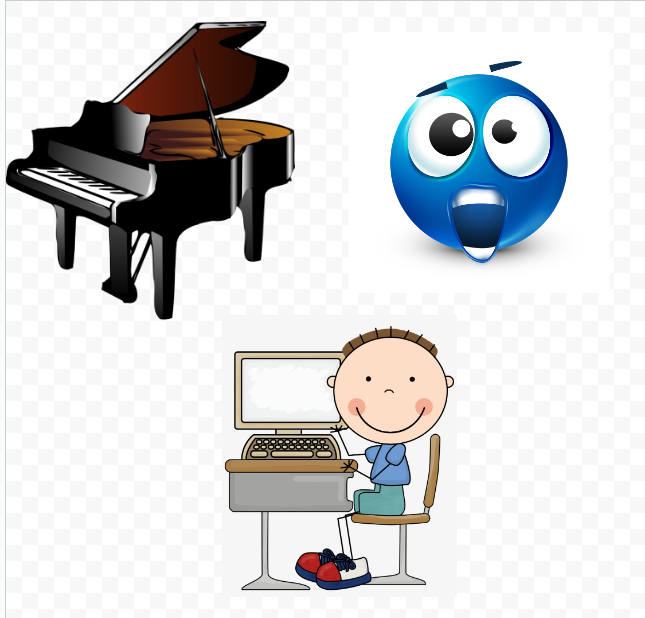

I added this image because it represents my main in school commitments. I am a part of the school's badminton team, who went to NCS. I am also a member of key club to help out among the community.
These images show some more of my extra curricular commitments. I have played the piano since I was just 6 years old, and enjoy practicing every day. I'm also fascinated by computers, and enjoy doing research and exploring them in my free time!